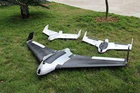

UAV_Choicer
ArduPilot Taipei Facebook群組
UAV_Choicer GitHub項目
無人機常見的種類
直升機 Helicopter
空拍機/四軸 drone quadcopter
穿越機 DJI FPV
固定翼 fixed wing

基於Arduino或是ESP32進行的飛行器項目
提交
 ArduPilot Taipei Facebook群組
ArduPilot Taipei Facebook群組
 UAV_Choicer GitHub項目
UAV_Choicer GitHub項目